如何判断各种车距
-
左侧外后视镜判断后车车距。
-
后车身已经进入后视镜虚线左侧的危险区域，说明
后车与你的车车距很近，此时不能转向。
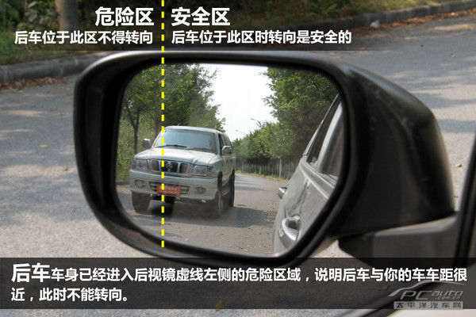
-
后车车身已贴近安全区与危险区边界，我们应该提高
警惕，但此时打灯转向依然是安全的。
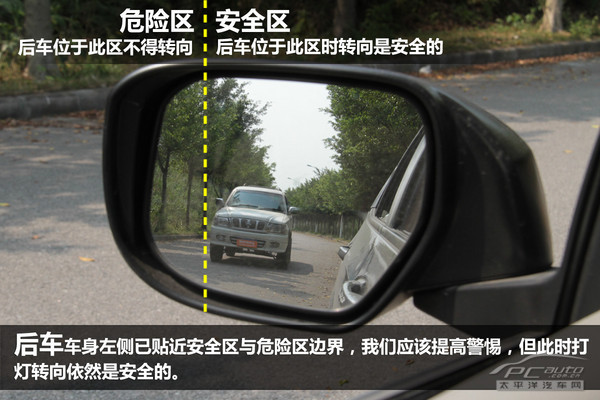
-
后车在安全区，位于后视镜中央，说明后车与你的车距
有15-20米，可以正常地进行转向操作。
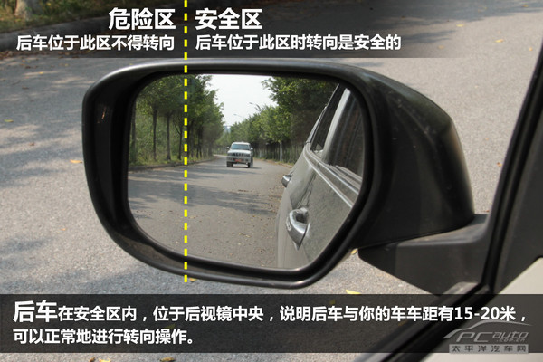
-
后车在安全区，位于后视镜中央靠右的位置，说明后车
与你的车车距较大，可以正常地进行转向操作。
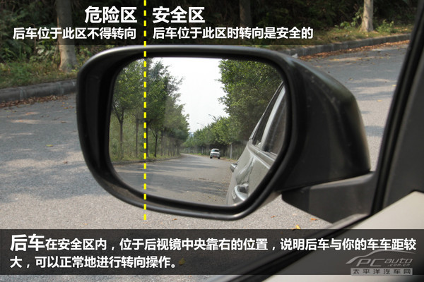
-
下面是两车实测距离图。
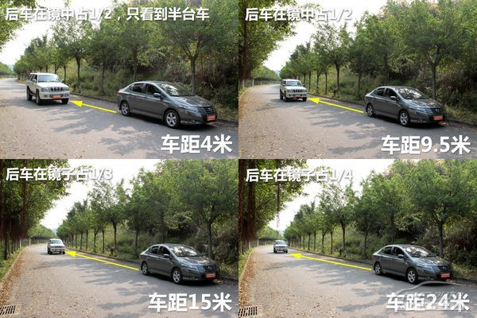
-
右侧外后视镜判断后车车距。
-
后车占据后视镜一半的区域，车身只有一半被看到。此时，
后车离你的车距离很近，你的车应保持现有车道行驶，
不应转向。
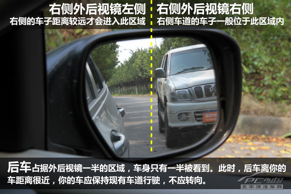
-
后车占据外后视镜一半的区域，能看到整台车。此时，
后车离你的车距离约有10米，在车速较慢的情况下可以打
灯后进行转向操作。
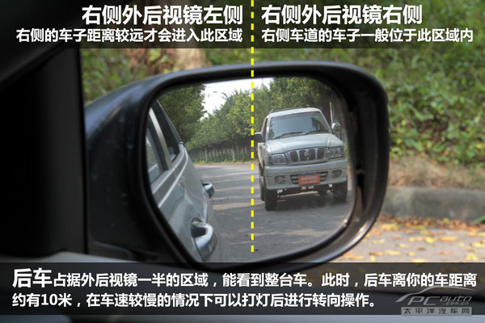
-
后车占据外后视镜1/3的区域，能看到整台车。此时，
后车离你的车距离约有15米，可以进行转向操作。
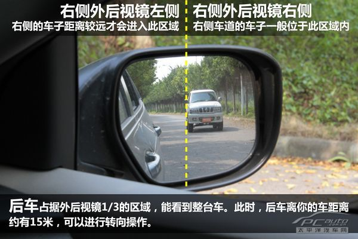
-
后车占据外后视镜1/4的区域，能看到整台车。此时，
后车离你的车距离约有24米，可以进行转向操作。
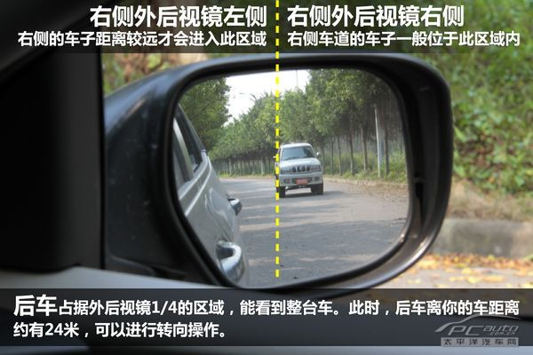
-
两车实测距离可参看下图。
-
目测判断前车距离。
与前车的距离是通过目测车辆前部遮挡前车后部的面积来确定的。
车型不同，其前部视野不同，因而不同车型判断前车距离的标准
也不一样，需要车主根据自己车辆的实际情况来确定。
这里使用的测试车型为一台本田锋范以及一台长城赛弗（SUV），
赛弗作为前车。
-
前车的轮胎下缘能够被看到，此车前车离后车距离5米。
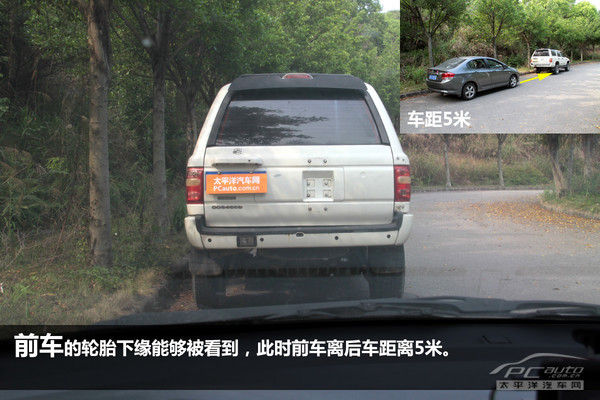
-
前车的保险杠下缘能够被看到，此车前车离后车距离1.2米。
我们的前车是一台SUV，底盘较高。如果前车是轿车，则在此车距下，
在后车内已看不到前车的保险杠上缘了。
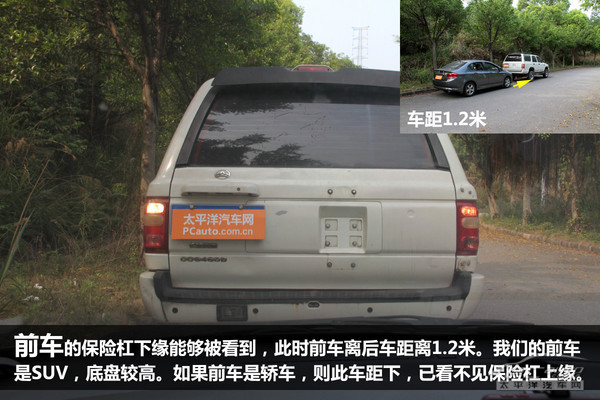
-
前车的保险杠上缘能够被看到，此时前车离后车距离0.5米。我们
的前车是SUV，底盘较高。如果前车是轿车，则在此车距下，在后
车内已看不到前车牌照的一小半了。
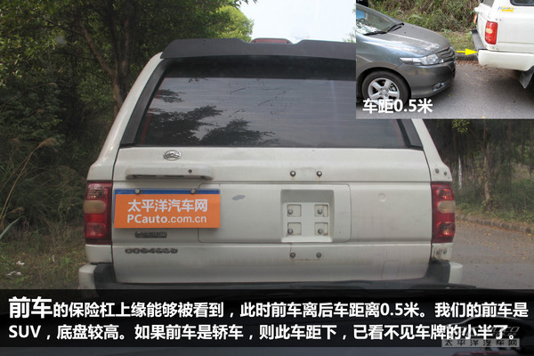
-
通过内后视镜判断后车距离。
通过后车在后视镜中影像的位置可以大体判断出后车离本车的距离。
和通过目测测量前车距离一样，不同车型判断后车距离的标准不一样，
需要车主根据自己车辆的实际情况来确定
-
后车进气格栅被完全遮蔽，此时后车离前车距离3米。在慢速跟着时，
此距离仍为安全距离；如车速较高则应加速或变道避免与后车距离过近。
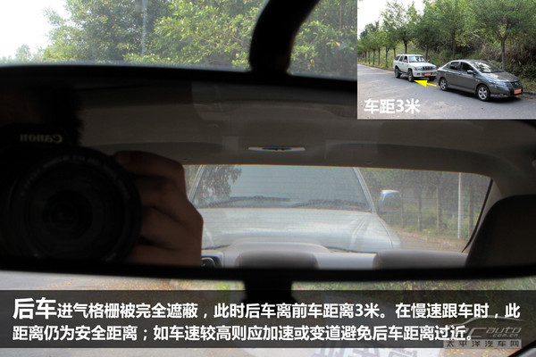
-
后车前保险杠被完全遮蔽，此时后车离前车距离8米。如车速较高，
应加速或变线保持与后车有足够的安全距离。
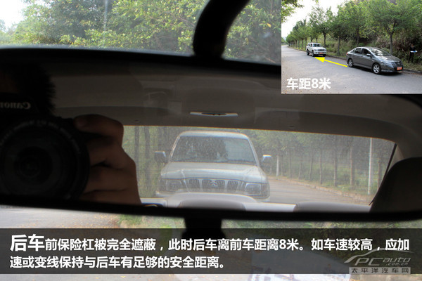
-
后车的轮胎下缘能够被看到，此时后车离前车距离23米。在此车距下，
安全速度约为25公里/小时。
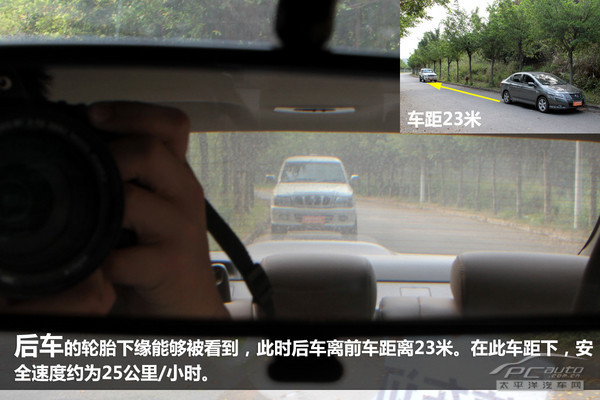
-
4判断车前行人的距离。
通过判断车辆前部遮挡前面行人身体上的不同部位可以判断出行人与车辆
前部的大概位置。
-
前面行人的脚刚好可以从车内看到，此时车子与行人的距离为5.5米。
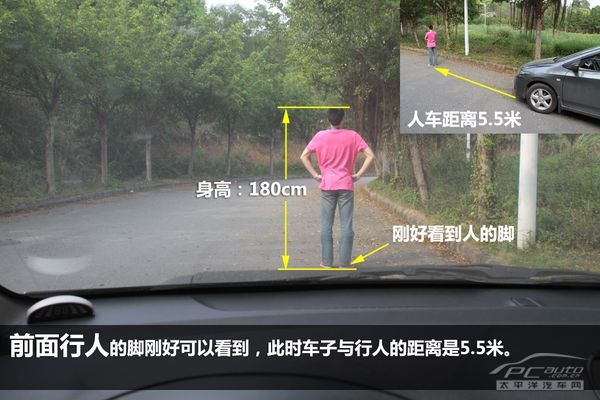
-
前面行人的膝盖部位刚好被遮住，此时车子与行人的距离是2.2米。
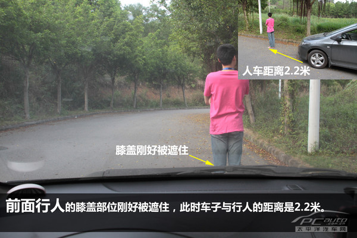
-
前面行人的臀部刚好被遮住，此时车子与行人的距离是0.3米。在相同
距离的情况下，SUV车型由于车身较高，从车内只能看到行人的腰部了。
为避免与行人发生擦碰，此时我们应该停车，让行人远离后再继续行驶。

汽车灯语
-
大灯灯语：
-
催促前车行驶：
远光灯闪一下。
-
拒绝左右两侧车道内同向行驶的车辆并线超车。
远光灯闪两下。
-
同意左右两侧车道内同向行驶的车辆并线超车。
远光灯闪一下。
-
让对向来车变为近光灯。
远近光灯切换两下。
双跳灯表示不满
-
提醒后车保持车距，不要跟太紧。
间歇性踩亮刹车灯。
-
提示前方司机其车辆出现了故障，应停车检查。
如车门没关好，尾灯烧了，轮胎没气了
大灯闪三下。
前车看到了，闪三下灯回应，表示感谢。
-
夜间过十字路口，提醒路口另一侧车辆注意减速。
远光灯闪几下。
过十字路口前切换为近光灯，这样可以看清横向是否有车辆。
-
夜间超车。
远光灯闪两下。
-
同意左右两侧车道内同向行驶的车辆并线超车。
-
夜间行车车灯语言：
-
当车灯光投射距离由远变近时，表示汽车驶近或驶入上坡道。
-
当车灯光投射距离由近变远时，表示汽车已在下坡道或由陡进入缓坡
-
当车灯光离开路面时，表示前面出现急弯或车辆已驶至坡顶。
-
当车灯光由路中移向路侧时，表示前方出现一般性弯道。
-
当车灯光从道路的一侧移到另一侧时，表示前方为连续转弯道。
-
当对向车射出光线较短时，表明来车将接近坡道；当对向车射出的光线
与路基脱离时，表示来车已接近坡顶。
-
当前车尾灯灯光或亮或暗时，表明前车在远处；当前车尾灯灯
光较为明亮时，表明前车在近处。
-
当前车尾灯左右间距较大时，表明前车为大型车；当前车尾灯
左右间距较小时，表明前车为小型车
-
各种灯的作用：
-
示宽灯（位置灯）：夜间用来显示车身宽度和长度。
-
转向灯：转向时开启，提示前后车辆和行人注意。
-
雾灯：雾天可视距离小于50米时使用。
-
近光灯：天黑没有路灯或照明亮度不够、
大雾大雪大雨天气视线受阻开启近光灯。
-
远光灯：路上没有其他照明设备，对面没有车辆行驶
时可以使用远光灯。由于前车后视镜也会折射后车
远光灯灯光。在距同向前车距离过近时（150米）内，
请关闭远光灯。